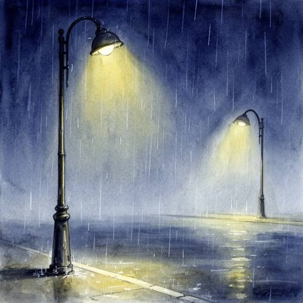
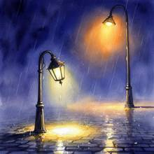

Attribute — In the watercolor painting style, a lonely street lamp lowered its hea
In the watercolor painting style, a lonely street lamp lowered its head sadly in the rainy night, and another street lamp in the distance was looking at it with concern.

Direct — one call, no iterationContinuum — Kimi K3 + FLUX.2-dev
Judge — Direct
FAILAttribute - Expression — The street lamps are depicted as inanimate objects without facial features or anthropomorphic characteristics. Therefore, they do not convey expressions of being 'sadly' or 'with concern'. The posture of the foreground lamp, with its head lowered, is a standard design for a street lamp and does not inherently express sadness.
FAILAction - Non-contact Interaction — The two street lamps are shown on what appears to be a walkway. The street lamp in the distance is oriented to cast light on the ground in front of it, just like the foreground lamp. It is not turned or positioned in a way that suggests it is 'looking at' the other lamp.
PASSStyle — The image is rendered in a distinct watercolor style. This is evident from the visible color washes and gradients in the night sky, the blending of light on the wet ground, the texture that resembles paper, and the way the rain is depicted with fine, streaky lines.
PASSGrammar - Consistency — The image consistently depicts the required entities. There is a prominent street lamp in the foreground and a second street lamp in the distance, fulfilling the prompt's mention of 'a lonely street lamp ... and another street lamp'.
Judge — Continuum
PASSAttribute - Expression — The street lamp on the left is physically bent over, with its lantern hanging down, which visually embodies the description of having 'lowered its head sadly'. The street lamp on the right is upright and its lantern is oriented towards the first lamp, which, in context, can be interpreted as looking 'with concern'.
PASSAction - Non-contact Interaction — The street lamp on the right is positioned further back and is turned towards the street lamp on the left. This orientation creates the visual effect of the second lamp 'looking at' the first.
PASSStyle — The image is executed in a clear watercolor painting style. This is evident from the soft blending and washes of color in the dark blue sky, the feathered edges of the light cast by the lamps, and the textured appearance of the wet cobblestones.
PASSGrammar - Consistency — The image depicts two distinct street lamps. One is in the foreground on the left, and another is in the distance on the right, fulfilling the requirement for 'a lonely street lamp ... and another street lamp'.
What the agent did
Thinking
Generate a watercolor painting: a lonely street lamp drooping its head sadly in a rainy night, another street lamp in the distance looking at it with concern. Use flux2-dev.
Model
I'll generate this poetic watercolor scene.
Step 1 — `generate_image`
{
"model": "flux2-dev",
"prompt": "Watercolor painting, loose wet-on-wet washes, soft pigment bleeds: a rainy night on a quiet cobblestone street. In the foreground, a lonely old-fashioned street lamp has its head bent downward sadly, its glass lantern drooping, casting a dim sorrowful pool of light on the wet pavement. In the distance, another street lamp stands taller, leaning slightly toward the first, its warm golden light tilted as if gazing at the sad lamp with concern. Rain streaks diagonally through the glow, reflections shimmer on wet ground, deep indigo and blue-violet night sky with gentle warm orange light halos. Melancholic, tender mood, expressive personification, visible paper texture and watercolor granulation."
}
Result img_0

Thinking
The image is quite good: watercolor, rainy night, a drooping sad lamp in the foreground, another taller lamp in the distance. The tall lamp appears curved toward the sad one, which reads as "looking at it with concern." The sad lamp even has a teardrop falling. Lovely. Check: "lonely street lamp lowered its head sadly" — yes, head bent down. "Another street lamp in the distance looking at it with concern" — the tall lamp is in the background, its head curves toward the sad lamp. Good enough. Mark best and stop.
Step 2 — `mark_best`
{
"image": "img_0",
"reason": "Watercolor rainy night with sad drooping foreground lamp and distant lamp leaning toward it with concern \u2014 all prompt elements present and evocative."
}
Model
The image captures the scene beautifully: - **The lonely lamp** in the foreground hangs its lantern head low, with droplets falling from it like tears — a poignant touch of personification. - **The distant lamp** stands taller, its curved neck and warm golden glow tilted toward the sad one, reading clearly as a concerned gaze. - **The watercolor treatment** — wet-on-wet indigo and violet washes, granulated pigment, rain streaks, and shimmering reflections on the cobblestones — gives it exactly the melancholic, tender mood of the prompt. Every requested element is present and correct, so I've marked this as the final result.